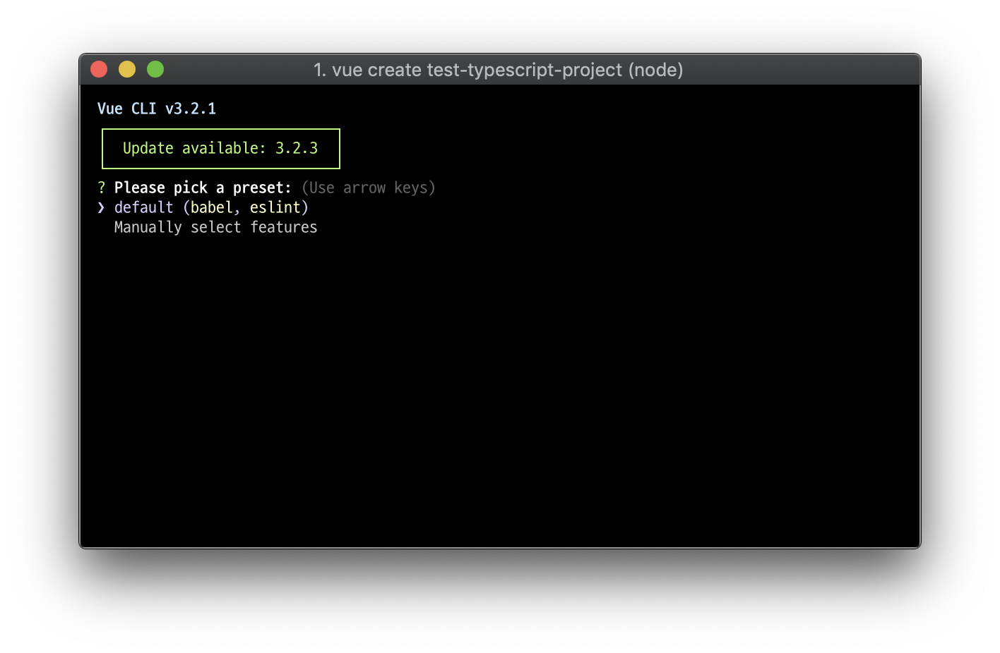

<!DOCTYPE html>
<html>
<head><meta name="generator" content="Hexo 3.8.0">
  <meta charset="utf-8">
  

  
  <title>VueJS 에서 Typescript로 개발하기 | programmer jeonghunKim8</title>
  <meta name="viewport" content="width=device-width, initial-scale=1, maximum-scale=1">
  <meta name="description" content="VueJS with TypeScript사전 준비Typescript로 VueJS 프로젝트를 사용하는 방법을 알아봅니다. pc 또는 mac에 nodejs와 npm이 설치 되어 있다는 전제 하에 진행합니다. vue-cli 2 버전대에서는 Typescript를 지원하지 않았지만, 3버전대로 업그레이드 되면서, Typescript를 공식적으로 지원하기 시작했습니다.">
<meta name="keywords" content="VueJS,TypeScript">
<meta property="og:type" content="article">
<meta property="og:title" content="VueJS 에서 Typescript로 개발하기">
<meta property="og:url" content="https://jeonghunkim8.github.io/2018/10/26/vue-typescript-1/index.html">
<meta property="og:site_name" content="programmer jeonghunKim8">
<meta property="og:description" content="VueJS with TypeScript사전 준비Typescript로 VueJS 프로젝트를 사용하는 방법을 알아봅니다. pc 또는 mac에 nodejs와 npm이 설치 되어 있다는 전제 하에 진행합니다. vue-cli 2 버전대에서는 Typescript를 지원하지 않았지만, 3버전대로 업그레이드 되면서, Typescript를 공식적으로 지원하기 시작했습니다.">
<meta property="og:locale" content="Korean">
<meta property="og:image" content="https://jeonghunkim8.github.io/2018/10/26/vue-typescript-1/1.png">
<meta property="og:updated_time" content="2019-01-07T14:52:08.087Z">
<meta name="twitter:card" content="summary">
<meta name="twitter:title" content="VueJS 에서 Typescript로 개발하기">
<meta name="twitter:description" content="VueJS with TypeScript사전 준비Typescript로 VueJS 프로젝트를 사용하는 방법을 알아봅니다. pc 또는 mac에 nodejs와 npm이 설치 되어 있다는 전제 하에 진행합니다. vue-cli 2 버전대에서는 Typescript를 지원하지 않았지만, 3버전대로 업그레이드 되면서, Typescript를 공식적으로 지원하기 시작했습니다.">
<meta name="twitter:image" content="https://jeonghunkim8.github.io/2018/10/26/vue-typescript-1/1.png">
  
    <link rel="alternate" href="/atom.xml" title="programmer jeonghunKim8" type="application/atom+xml">
  
  
    <link rel="icon" href="/favicon.png">
  
  
    <link href="//fonts.googleapis.com/css?family=Source+Code+Pro" rel="stylesheet" type="text/css">
  
  <link rel="stylesheet" href="/css/style.css">
</head>
</html>
<body>
  <div id="container">
    <div id="wrap">
      <header id="header">
  <div id="banner"></div>
  <div id="header-outer" class="outer">
    <div id="header-title" class="inner">
      <h1 id="logo-wrap">
        <a href="/" id="logo">programmer jeonghunKim8</a>
      </h1>
      
    </div>
    <div id="header-inner" class="inner">
      <nav id="main-nav">
        <a id="main-nav-toggle" class="nav-icon"></a>
        
          <a class="main-nav-link" href="/">Home</a>
        
          <a class="main-nav-link" href="/archives">Archives</a>
        
      </nav>
      <nav id="sub-nav">
        
          <a id="nav-rss-link" class="nav-icon" href="/atom.xml" title="RSS Feed"></a>
        
        <a id="nav-search-btn" class="nav-icon" title="Search"></a>
      </nav>
      <div id="search-form-wrap">
        <form action="//google.com/search" method="get" accept-charset="UTF-8" class="search-form"><input type="search" name="q" class="search-form-input" placeholder="Search"><button type="submit" class="search-form-submit">&#xF002;</button><input type="hidden" name="sitesearch" value="https://jeonghunkim8.github.io"></form>
      </div>
    </div>
  </div>
</header>
      <div class="outer">
        <section id="main"><article id="post-vue-typescript-1" class="article article-type-post" itemscope="" itemprop="blogPost">
  <div class="article-meta">
    <a href="/2018/10/26/vue-typescript-1/" class="article-date">
  <time datetime="2018-10-26T11:00:00.000Z" itemprop="datePublished">2018-10-26</time>
</a>
    
  </div>
  <div class="article-inner">
    
    
      <header class="article-header">
        
  
    <h1 class="article-title" itemprop="name">
      VueJS 에서 Typescript로 개발하기
    </h1>
  

      </header>
    
    <div class="article-entry" itemprop="articleBody">
      
        <h1 id="VueJS-with-TypeScript"><a href="#VueJS-with-TypeScript" class="headerlink" title="VueJS with TypeScript"></a>VueJS with TypeScript</h1><h2 id="사전-준비"><a href="#사전-준비" class="headerlink" title="사전 준비"></a>사전 준비</h2><p>Typescript로 VueJS 프로젝트를 사용하는 방법을 알아봅니다.</p>
<p>pc 또는 mac에 nodejs와 npm이 설치 되어 있다는 전제 하에 진행합니다.</p>
<p>vue-cli 2 버전대에서는 Typescript를 지원하지 않았지만, 3버전대로 업그레이드 되면서, Typescript를 공식적으로 지원하기 시작했습니다.</p>
<p>기존에는 프로젝트 생성 후 수동으로 Typescript에 맞게 꾸며야만 했으나, vue cli 3 버전부터는 프로젝트 생성 시 옵션을 통하여 Typescript를 선택할 수 있어 많이 편해졌습니다.</p>
<p>터미널 (또는 CMD)창을 열어 아래 명령어를 입력하여 vue-cli를 설치 해 줍니다.</p>
<figure class="highlight plain"><table><tr><td class="gutter"><pre><span class="line">1</span><br></pre></td><td class="code"><pre><span class="line">npm install -g @vue/cli</span><br></pre></td></tr></table></figure>
<p>이제 간단히 vue cli 설치가 끝났습니다.</p>
<p>npm을 대신할 패키지 매니저 yarn도 설치 해줍니다.<br>(npm을 사용하실 분들은 설치하지 않으셔도 됩니다.)</p>
<figure class="highlight plain"><table><tr><td class="gutter"><pre><span class="line">1</span><br></pre></td><td class="code"><pre><span class="line">npm install -g yarn</span><br></pre></td></tr></table></figure>
<p>이제 콘솔에서 <code>vue</code> 명령어를 통해 vue cli를 호출할 수 있습니다.<br><figure class="highlight plain"><table><tr><td class="gutter"><pre><span class="line">1</span><br></pre></td><td class="code"><pre><span class="line">vue --version</span><br></pre></td></tr></table></figure></p>
<p>글 작성 시점의 최신 버전은 3.2.1이네요.</p>
<h2 id="vue-cli를-통해-프로젝트-생성"><a href="#vue-cli를-통해-프로젝트-생성" class="headerlink" title="vue cli를 통해 프로젝트 생성"></a>vue cli를 통해 프로젝트 생성</h2><p>vue-cli를 통해 프로젝트를 생성하는것은 아주 쉽습니다.</p>
<p>터미널을 열고</p>
<figure class="highlight plain"><table><tr><td class="gutter"><pre><span class="line">1</span><br></pre></td><td class="code"><pre><span class="line">vue ui</span><br></pre></td></tr></table></figure>
<p>를 입력하여 브라우저를 통한 gui화면을 통해 뷰 프로젝트를 생성하고 관리할 수도 있습니다.</p>
<p>그러나, 터미널이 더 편한 개발자들도 많을 것 같습니다.<br>(속도도 더 빠르구요..)</p>
<figure class="highlight plain"><table><tr><td class="gutter"><pre><span class="line">1</span><br></pre></td><td class="code"><pre><span class="line">vue create test-typescript-project</span><br></pre></td></tr></table></figure>
<p>터미널에서 위 명령어를 입력합니다.</p>
<p></p>

      
    </div>
    <footer class="article-footer">
      <a data-url="https://jeonghunkim8.github.io/2018/10/26/vue-typescript-1/" data-id="cjqmgqn4s0000uhzufzvgfw9l" class="article-share-link">Share</a>
      
      
  <ul class="article-tag-list"><li class="article-tag-list-item"><a class="article-tag-list-link" href="/tags/TypeScript/">TypeScript</a></li><li class="article-tag-list-item"><a class="article-tag-list-link" href="/tags/VueJS/">VueJS</a></li></ul>

    </footer>
  </div>
  
    
<nav id="article-nav">
  
  
    <a href="/2018/10/09/AmazonMQ-사용하기/" id="article-nav-older" class="article-nav-link-wrap">
      <strong class="article-nav-caption">Older</strong>
      <div class="article-nav-title">AmazonMQ 사용하기</div>
    </a>
  
</nav>

  
</article>

</section>
        
          <aside id="sidebar">
  
    

  
    
  <div class="widget-wrap">
    <h3 class="widget-title">Tags</h3>
    <div class="widget">
      <ul class="tag-list"><li class="tag-list-item"><a class="tag-list-link" href="/tags/ActiveMQ/">ActiveMQ</a></li><li class="tag-list-item"><a class="tag-list-link" href="/tags/AmazonMQ/">AmazonMQ</a></li><li class="tag-list-item"><a class="tag-list-link" href="/tags/Java/">Java</a></li><li class="tag-list-item"><a class="tag-list-link" href="/tags/Spring/">Spring</a></li><li class="tag-list-item"><a class="tag-list-link" href="/tags/TypeScript/">TypeScript</a></li><li class="tag-list-item"><a class="tag-list-link" href="/tags/VueJS/">VueJS</a></li></ul>
    </div>
  </div>


  
    
  <div class="widget-wrap">
    <h3 class="widget-title">Tag Cloud</h3>
    <div class="widget tagcloud">
      <a href="/tags/ActiveMQ/" style="font-size: 10px;">ActiveMQ</a> <a href="/tags/AmazonMQ/" style="font-size: 10px;">AmazonMQ</a> <a href="/tags/Java/" style="font-size: 10px;">Java</a> <a href="/tags/Spring/" style="font-size: 10px;">Spring</a> <a href="/tags/TypeScript/" style="font-size: 10px;">TypeScript</a> <a href="/tags/VueJS/" style="font-size: 10px;">VueJS</a>
    </div>
  </div>

  
    
  <div class="widget-wrap">
    <h3 class="widget-title">Archives</h3>
    <div class="widget">
      <ul class="archive-list"><li class="archive-list-item"><a class="archive-list-link" href="/archives/2018/10/">October 2018</a></li></ul>
    </div>
  </div>


  
    
  <div class="widget-wrap">
    <h3 class="widget-title">Recent Posts</h3>
    <div class="widget">
      <ul>
        
          <li>
            <a href="/2018/10/26/vue-typescript-1/">VueJS 에서 Typescript로 개발하기</a>
          </li>
        
          <li>
            <a href="/2018/10/09/AmazonMQ-사용하기/">AmazonMQ 사용하기</a>
          </li>
        
      </ul>
    </div>
  </div>

  
</aside>
        
      </div>
      <footer id="footer">
  
  <div class="outer">
    <div id="footer-info" class="inner">
      &copy; 2019 jeonghun.Kim<br>
      Powered by <a href="http://hexo.io/" target="_blank">Hexo</a>
    </div>
  </div>
</footer>
    </div>
    <nav id="mobile-nav">
  
    <a href="/" class="mobile-nav-link">Home</a>
  
    <a href="/archives" class="mobile-nav-link">Archives</a>
  
</nav>
    

<script src="//ajax.googleapis.com/ajax/libs/jquery/2.0.3/jquery.min.js"></script>


  <link rel="stylesheet" href="/fancybox/jquery.fancybox.css">
  <script src="/fancybox/jquery.fancybox.pack.js"></script>


<script src="/js/script.js"></script>


  </div>
</body>
</html>